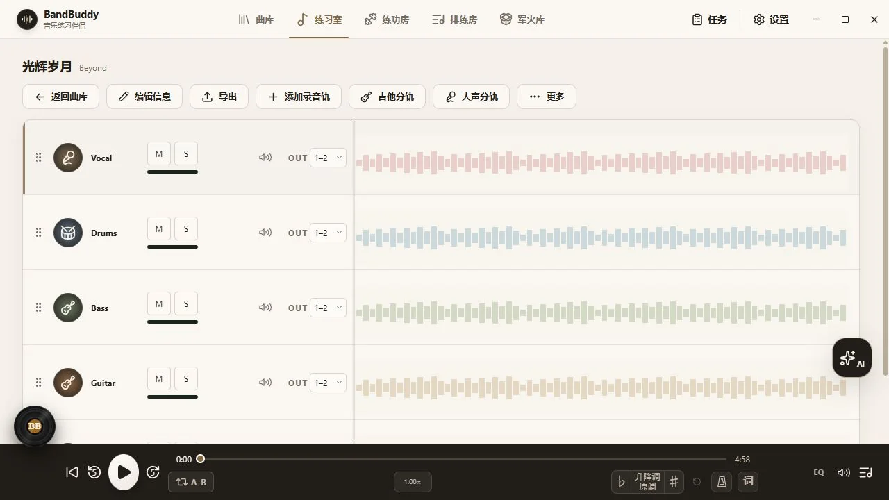
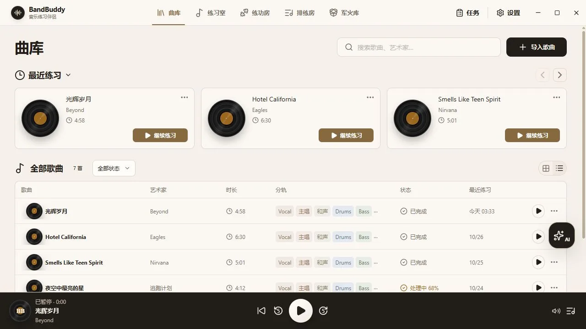

使用说明书
选择你的平台，从第一首歌开始。
更新于 2026 年 10 月 28 日
没有找到相关章节。试试「循环」「录音」「模型」等关键词。
快速开始
先用一首熟悉的歌走完流程。以下为 PC 桌面端的安装、分轨与练习步骤。
- 获取软件。在 QQ 群 398245265 下载 PC 安装包，选择与你的系统和处理器匹配的版本。
- 等待组件就绪。桌面端在曲库首次显示后，后台检查与准备组件。打开「设置 → 分轨与运行环境」查看下载、校验与准备状态；首次分轨需要联网下载环境和模型。
- 导入自己的歌曲。在曲库点击「导入歌曲」，选择本地音频或带音轨的视频。也可导入已有分轨文件，跳过 AI 分离。
- 基础六轨完成就开始练。打开歌曲进入练习室。先 Solo 目标声部听清，再静音该声部，用剩余伴奏跟弹。吉他和人声细分可在后台继续。
- 把难点圈小。将进度定位到小节起点，设 A；到终点设 B。调低速度反复练，再逐步回到原速。速度、循环和混音会随歌曲保存。

安装与设备
从 QQ 群 398245265 获取 PC 安装包。Windows 使用 x64 安装包，macOS 选择对应处理器架构；支持范围以群内随包发布说明为准。
Windows 安装版与便携版
安装版按向导安装；便携版运行对应的 portable 程序即可。下载后核对随包校验信息和发布说明，安装包签名状态以实际发布文件为准。
首次启动与设备选择
打开「设置 → 分轨与运行环境」查看组件准备状态。先确认耳机或声卡输出；使用录音、军火库监听或调音器时，再选择输入设备并授予必要的麦克风权限。软件重启不会自动打开军火库输入监听。
桌面端提供歌曲练习、离线教材、军火库、录音与排练。源码见 BandBuddy PC 项目。
曲库与导入
曲库管理你自己的音频、视频、分轨和练习状态。软件不附带歌曲，也不提供在线音乐下载。
导入音频或视频
- 点击曲库右上角「导入歌曲」，选择文件，确认后进入后台队列。
- 音频支持 MP3、WAV、FLAC、M4A、AAC、OGG、OPUS、AIFF 等；视频支持 MP4、MOV、MKV、WebM 等。具体编码须受内置 FFmpeg 支持，不支持 DRM 加密媒体。
- 视频会提取音频用于分轨，保留画面用于同步练习。没有音轨的视频不能用于分轨练习。
已经有分轨文件
在导入窗口选择「已分轨数据」，添加 2–9 条已有音轨，使用预设名称或自定义轨名。文件经标准化后进入曲库，无需安装分离模型。为获得正确对齐，请使用同一起点、同一首歌的音轨。
找到上次练过的歌
搜索歌曲或艺术家，用收藏、处理中、最近练习筛选；可在列表与卡片布局间切换。歌曲信息支持编辑标题、艺术家、BPM、调性与拍号。打开歌曲后会恢复保存的播放与混音状态。
查看任务
顶部「任务」显示分轨或导出进度，支持取消和重试。显存不足时可选择 CPU 重试，处理速度会受设备影响。取消或细分失败不会抹去已成功生成的基础分轨。

AI 分轨与细分
先把整首歌分成基础声部，再按练习需要细分。AI 分离可能产生串音、漏音或音色变化，适合练习与辅助参考。
基础六轨
Vocal（人声）、Drums（鼓）、Bass（贝斯）、Guitar（吉他）、Piano（钢琴）与 Other（其他）。基础六轨生成后即可进入练习室。Piano 是实验性声部，复杂编曲中可能与吉他或其他声部串音。
吉他细分
后台继续生成 Acoustic（木吉他）、Lead（主音吉他）、Rhythm（节奏吉他）。完成后点击练习室的「吉他分轨」切换；开启后，完整 Guitar 被三条细分轨替代，避免叠加发声。再次点击回到完整吉他。
主唱与和声
新歌曲在基础分轨完成后自动继续处理人声细分，完成后提示就绪。点击「人声分轨」显示主唱、和声两轨，再次点击恢复完整人声。旧歌曲尚未细分时，点击按钮会按需处理；期间仍可使用完整人声练习。
在人声音轨菜单可选择「去主唱，保留和声」或「仅听和声」。先听完整人声与和声效果，再选择适合当前编曲的模式。
质量、格式与模型
桌面设置提供人声效率档与质量档，默认效率档；吉他细分有极速、平衡、高质量档位。首次使用相应档位时下载对应模型，已排队任务使用创建时选择的档位。
「高音质分轨」关闭时保存 MP3 320 kbps，开启时保存 44.1 kHz、24-bit FLAC。这个开关改变新任务存储格式，不改变推理档位；已有歌曲须重新分轨才会改变格式。
练习室与混音
用声部控制听清要练的部分，再用速度与循环把难点缩小。
每轨的 M、S 和音量
- M / Mute：静音该音轨，适合把自己的乐器声部移除后跟奏。
- S / Solo：只听独奏的音轨，可同时 Solo 多条，例如贝斯与鼓。
- 增益：调整当前轨的音量；主音量控制总输出。不同模式的混音会随歌曲保存。
A–B 循环
- 把进度移到片段开始，点击 A–B 按钮一次，设 A 点。
- 移到片段结束，再点一次，设 B 点并立即开始循环。
- 第三次点击取消循环。也可用 A、B 按钮或对应快捷键重新设边界。
「跳回并播放」会回到循环 A 点；未循环时回歌曲开头，并立即播放，不重复预备拍。循环时尽量选完整小节，衔接更便于跟弹。
变速与升降调
桌面端速度范围为 0.20×–4.00×，提供常用倍率与无级滑轨，变速保持音高。底栏 ♭ / ♯ 每次升降一个半音，范围 −12 至 +12 半音；点击调值可打开滑轨，支持恢复原调。鼓轨保持原音。
均衡与输出
歌曲支持 EQ 音色调整。使用多通道输出设备时，可把音轨路由到不同立体声通道对，送入 DAW 或虚拟声卡；可用通道取决于声卡与播放引擎。原生引擎预览主要提供立体声路径。
一段实际练习
先 Solo 吉他听两遍 → 设一个四小节循环 → 用 0.8× 跟弹 → 静音吉他、跟伴奏演奏 → 回到 1.0×。最后录一个 Take，听节拍、音准和衔接。
节拍、调性与预备拍
把拍点对好，再开始练；自动分析给出参考，你可以手动修正。
BPM 与节拍器
软件可优先分析鼓轨估计 BPM，也可以手动编辑歌曲 BPM。打开节拍器后，拍点随播放速度同步。通过拍点提前／延后微调，让点击声对齐音乐的强拍；节拍器音量可独立调整。
预备拍
选择关闭、4 拍或 8 拍。开始前给自己准备时间；预备拍不会写进录音 Take。跳回重练操作不会重复预备拍。
歌曲调性
本机分析主调与大小调，并给出置信度。结果不确定时参考候选调性与可能转调的片段。可手动纠正，重新分析不会覆盖手动选择。复杂和声、现场录音或转调歌曲尤其需要听觉核对。
视频与歌词
把画面、歌词和伴奏放在同一段练习里。
视频跟练
导入带音轨的视频后，软件在本机提取音频进行分轨，保留视频画面。播放、暂停、跳转、循环与速度变化跟随当前歌曲；原视频音轨静音，避免和分轨重复发声。
点击全屏按钮或双击视频进入全屏。全屏内可控制播放、进度、速度、循环和跳回重练。不兼容的画面编码可能需要本机转换，耗时与空间取决于源文件。
导入歌词
打开歌曲菜单，选择「导入 / 替换歌词」。桌面端支持 LRC、逐字 LRC / KRC / QRC、SRT / VTT 与 TTML；歌词必须包含可用时间信息才能跟随播放。
桌面歌词
开启独立置顶歌词窗口显示当前句、下一句与歌曲进度；排练连续播放时随当前歌曲切换。歌词样式可在设置中调整。歌词不同步时，先检查文件是否属于同一录音版本。
练功房
把一首歌里碰到的问题，变成可以系统学习的知识和练习。
体系 → 路线图 → 正文
- 从顶部进入「练功房」，选择需要学习的体系与乐器情境。
- 沿路线图打开知识正文，先看学习目标，再按步骤阅读图解、例子、常见问题与自检。
- 把相关专项练习加入自己的练习过程；教材、图解和谱例随软件打包，可离线阅读。
覆盖电吉他、原声吉他、贝斯、尤克里里、鼓、钢琴与键盘等情境；合成器课程涵盖减法、FM、波表、加法、采样、颗粒与模块化，相关操作实验需在自己的软硬件合成器中完成。
谱例与专项练习
统一 MusicXML 阅读器展示五线谱、TAB、打击乐谱与钢琴大谱表，支持播放高亮和谱面内部滚动。选择合适的读谱方式，从慢速开始，关注节拍和手型。
指板实验室与工具箱
在指板实验室探索音阶与和弦。工具箱提供节拍器、调音器、鼓机、和弦查询、五度圈与持续参考音；可先用工具弄懂一个概念，再回到歌曲里验证。
军火库与音色
从箱头、箱体开始，搭一条属于自己的效果链。以下介绍桌面端当前已实现的 5 款原生箱头、7 款物理箱体和 72 条内置箱体 IR。
连接乐器并监听
- 将乐器连接到声卡，在军火库设备面板选择输入、输出、通道、采样率和缓冲。
- 先查看输入电平，避免输入削波；确认耳机或音箱接到选定输出。
- 添加 AMP 箱头和 CAB 箱体，或打开自己保存的预设，再手动开启监听。切换页面后监听可继续，全局状态条可返回军火库或停止。
搭建效果链
可使用箱头、箱体、动态、均衡、调制、延迟、混响等模块；一条链最多 24 个模块，支持重复模块、拖动排序、复制、旁通与删除。工作台保留草稿，提供撤销／重做及会话内 A/B 快照。
NAM、IR 与预设
在资源入口导入自己的 NAM 模型与箱体 IR，管理名称、标签和备注。用户预设可收藏、搜索，并通过 .bbtone 导入导出；预设中的资源哈希用于识别资源，NAM／IR 文件需要另外导入。

5 款原生箱头
添加 AMP 后，在型号列表中选择下列名称。每款模型采用不同的前级、音调网络和功放结构；表中的原型用于说明设计参考，软件显示名称以第一列为准。
| 软件名称 / 参考原型 | 结构与使用方向 | 面板参数 |
|---|---|---|
| US Double 763 Fender Twin Reverb AB763 Normal | 两级 12AX7 前级与 6L6 推挽功放。可从清音、和弦与踏板平台开始调节。 | Gain、Bass、Middle、Treble、Level；无 Presence。 |
| Brit 45 Marshall JTM45 Bright | Bright 通道、两级 12AX7、KT66 功放及电源下垂响应。适合探索从清音到过载的动态变化。 | Gain、Bass、Middle、Treble、Level、Presence。 |
| Brit 800 Marshall JCM800 2203 | 三级 12AX7 前级，含冷偏置削波级，搭配 EL34 功放。可作为摇滚节奏和主音的调音起点。 | Gain、Bass、Middle、Treble、Master、Presence。 |
| Brit Chime 30 VOX AC30 Top Boost | 两级 ECC83、Top Boost 高低音网络与无负反馈 EL84 功放。用 Treble 和 Cut 配合控制明亮度。 | Gain、Bass、Treble、Cut、Level；无 Middle / Presence。 |
| Cali Dual 100 MESA Dual Rectifier Rev F Red Modern | 四级 12AX7 前级，含冷偏置级，搭配无负反馈 6L6 功放。用于探索高增益节奏与主音。 | Gain、Bass、Middle、Treble、Master、Presence；Presence 位于前级。 |
Level 与 Master 不同。US Double 763、Brit 45、Brit Chime 30 的 Level 是功放后的软件输出音量，不会单独增加功放失真；调整破音程度应从输入和 Gain 入手。Brit 800 与 Cali Dual 100 的 Master 位于功放前，会影响功放的驱动程度。
7 款物理箱体
在 CAB 型号列表中选择。物理箱体根据扬声器、箱体和辐射模型计算响应；同一列表里的「IR · 箱体响应」则加载采样响应文件，两者是不同的处理方式。
| 软件名称 | 参考配置 | 结构 |
|---|---|---|
| 1x12 US C12N | Fender Deluxe；1 × Jensen C12N | 开放式背板，参考容积 40 L。 |
| 2x12 US C12N | Fender Twin；2 × Jensen C12N，并联 | 开放式背板，参考容积 70 L。 |
| 4x12 Brit G25 | Marshall 1960AX；4 × Celestion G12M-25 Greenback | 封闭式，参考容积 170 L。 |
| 4x12 Brit T75 | Marshall 1960B；4 × Celestion G12T-75 | 封闭式，参考容积 180 L。 |
| 2x12 Chime G25 | VOX AC30C2；2 × Greenback，串联 | 开放式背板，参考容积 65 L；此型号不是 Alnico Blue 配置。 |
| 4x12 Cali V30 | MESA Rectifier 箱体参考；4 × 通用 Vintage 30 模型 | 封闭式，参考容积 200 L；未使用 MESA 定制单元的实测校准。 |
| 4x12 Citrus V30 | Orange PPC412；4 × Vintage 30 | 封闭式，参考容积 150 L。 |
物理箱体的 Distance 为 0.25–3 m，Angle 为 0–75°，用于调节远场距离与离轴响应；它们不是贴近网罩的麦克风位置模拟。封闭式箱体还可在高级参数中调节容积。使用 Low Cut、High Cut 与 Level 整理频段和输出音量。
72 条内置箱体 IR
内置库包含 62 条实体箱体响应和 10 条 Korg AX1500g 数字箱体效果响应。选择「IR · 箱体响应」，再搜索或挑选资源；也可以批量导入自己的 IR。
| 资源组 | 数量 | 来源标注与许可 |
|---|---|---|
| Emerald | 6 | Marshall 1960AX / Greenback；CC0。 |
| Brutal | 15 | 改装 Behringer BG412S；CC0。 |
| DarkDays | 13 | MESA 2×12 / V30；CC BY 4.0。 |
| Jester | 8 | ENGL / V30；CC BY 4.0。 |
| H&K / Celestion | 12 | 以资源文件标注为准；CC BY 4.0。 |
| Jensen | 8 | 以资源文件标注为准；CC BY 4.0。 |
| Korg AX1500g | 10 | 数字箱体效果的响应，不是实体箱体实录；CC0。 |
自带与导入 IR 均保留原始电平、极性和延迟，不会自动做峰值归一化或时间对齐。支持单 / 双声道 WAV（PCM 16 / 24 / 32 位或 Float32）、8–192 kHz 采样率、最长 2 秒，并自动重采样。更换 IR 后先比较响度，再判断音色；使用双 IR 时留意相位与延迟。资源来源和署名保留在软件随附的 IR 说明中。
从一套搭配开始调节
- 先接好链路：乐器输入 → AMP → CAB → 输出；需要时再加入动态、调制、延迟与混响。
- 选一组起点：US Double 763 + 2x12 US C12N；Brit 45 / Brit 800 + 4x12 Brit G25；Brit Chime 30 + 2x12 Chime G25；Cali Dual 100 + 4x12 Cali V30。搭配可自由更换。
- 先调失真，再对齐音量：调整 Gain，接着微调音调参数，最后用 Level 或输出音量控制响度；支持 Master 的箱头可进一步调整功放驱动。
- 再调箱体：用角度与高低切整理频段；切换 IR 时先降低音量，逐个试听。保存用户预设，方便回到同一起点。
AMP 的 4× 过采样适合常规使用，2× 可降低处理负载。自动负载匹配只读取紧挨着 AMP、已启用的物理 CAB；中间插入其他模块、选择 IR 或旁通 CAB 时，会使用该箱头的默认负载。高级设置还提供 Sag、输入校准与 8 Ω 电阻负载等选项。
本机效果插件
在「本机效果插件」扫描已安装的 VST3，macOS 还提供 Audio Unit 相关支持；可添加自定义目录、搜索、重复添加、调整处理位置、旁通、打开编辑器或通用参数面板。扫描应在录音、监听和原生播放停止时进行。第三方插件需自行安装并取得授权。
快录与循环调音
快录保存原始 DI 和开始录制时的音色快照。选择最长 60 秒片段循环试听，用当前音色反复调节，再导出 DI 或效果声。效果声的再处理基于保留的干声，不等同于每个参数变化都被实时自动化记录。
多轨录音与 Take
录下自己，听见练习时不容易察觉的细节。
- 在练习室创建录音轨，选择输入设备与单声道／立体声输入通道。
- 先进行输入电平测试，再选择采样率、缓冲和输出设备。Windows 提供 WASAPI，系统可用时支持 ASIO；macOS 使用 CoreAudio。
- 把进度放到准备开始的位置，设置需要的预备拍，然后开始录制。
- 停止后保留 Take。可以重命名、切换同一轨的不同 Take，独立静音、Solo 与调节增益。
- 回放伴奏与录音，比较节奏、音准和衔接；导出当前混音时勾选需要的录音轨。
对齐与延迟
可以按设备保存对齐偏移。输入输出分离时，软件会做时钟校正并显示 xrun 等计数；实际往返延迟仍受声卡、驱动、缓冲与效果链影响。先录一段短促、清晰的节奏来核对对齐。
为什么要保留多个 Take
同一段可以先录慢速稳定版，再录原速版。选择当前回放的 Take 即可做比较，无需覆盖上一次演奏。录音回放会处理练习速度、调性与歌曲位置关系。
整场排练编排
把歌曲与衔接排成一条时间线，按一场排练的节奏练下来。
- 打开「排练室」，创建一份编排单。
- 将曲库歌曲加入队列，拖动调整顺序；需要时插入可调时长的空白衔接。
- 先在单曲练习室保存速度、预备拍、节拍器与混音；排练按歌曲保存的状态连续播放。
- 需要攻克一段时进入单曲练习，完成后返回原排练位置。
- 为整场建立录音轨，从当前时间线位置录制，可暂停与继续。
修改编排与旧录音
Take 绑定录制时的编排修订。后来改变歌曲顺序或间隔，不会让旧录音失去当时的上下文。重要排练建议同时导出结果并保留原始录音备份。
分轨与混音导出
把练习伴奏带走，或保存这一次带录音的演奏。
- 从曲库或练习室打开歌曲「导出」。
- 选择单独的所选分轨，或「当前练习混音」。后者应用当前 Mute、Solo、每轨增益与主增益，可包含已启用的录音轨。
- 选择是否应用练习速度、是否只导出 A–B 区间。导出保留当前非鼓轨升降调，鼓轨保持原音。
- 选择 WAV / FLAC（44.1 kHz、24-bit）或 MP3（320 kbps），确认目标路径并查看任务进度。
当前隐藏的备选轨不参与默认混音导出。想导出和声伴奏时，先切到主唱／和声模式、静音主唱，再确认其他轨的混音状态。
局域网练琴
电脑负责曲库与处理，手机或平板在同一网络中打开练习页面。
- 电脑保持 BandBuddy 运行，并先完成要练歌曲的基础分轨。
- 在「设置 → 网络与共享」开启局域网模式。
- 让手机、平板或另一台电脑连接同一局域网，在浏览器打开设置页实际显示的地址。
- 选择歌曲，使用播放／暂停、变速、升降调、A–B 循环及音轨音量、M / S；歌词与视频随歌曲显示。
默认使用 60232 端口，冲突时自动选择空闲端口，所以请以设置里显示的地址为准。持续音频由电脑处理后通过网络发送，延迟和稳定性受 Wi-Fi、浏览器及设备影响。
无法访问时
检查电脑是否休眠、局域网模式是否开启、手机是否仍在同一 Wi-Fi；访客网络或路由器的客户端隔离可能阻止设备互访。检查系统防火墙是否允许该局域网服务。不要把官网域名当作自己电脑的局域网地址。
邦邦 AI 图文对话
遇到操作或练习问题，可以从右下角悬浮图标打开「邦邦」，收起后继续使用软件。
配置与使用
- 在「设置 → 实验室功能 → AI 对话」填写自己的 Base URL、Token / API Key 与模型名，使用兼容 Chat Completions 的接口。
- 点击「检验配置」，通过后保存并启用；也可先保存，稍后检验。
- 发送文字，或选择、粘贴、拖入图片。支持 PNG、JPEG、WebP、GIF，每条最多 4 张，单张不超过 5 MB、合计不超过 12 MB。
可新建、切换、重命名和删除会话，停止与重试回复。会话和图片在本机保存；上下文最多 20 轮，达到限制或文字过长时自动摘要较早内容，完整历史仍保留。
能帮你做什么
软件操作问题会参考随包指南；设备、任务与错误相关问题可按需读取脱敏状态。状态查询只读，不会通过聊天改设置、执行命令、打开麦克风或开始录音。
联网与数据
使用 AI 时，你发送的文字、图片、对话上下文和必要的指南或脱敏状态会提交到配置的接口。服务可能产生费用，其能力与数据处理规则由服务商决定。Token 加密保存在本机，不放入指南或聊天诊断日志。
环境、存储与恢复
分轨需要本地组件与模型。准备环境通常只在首次使用或修复升级时进行。
查看准备状态
曲库首次显示后，组件检查在后台进行；录音或原生监听期间会推迟准备。设置页可查看功能状态、下载进度，暂停、继续、一键修复或导出本地诊断。主动暂停会跨启动保存，稍后需手动继续。
下载失败与网络
桌面端默认使用中国大陆镜像，可在高级网络相关设置切换官方源或配置受支持的自定义 HTTPS 地址，也可配置系统或手动代理。下载支持缓存、续传与 SHA-256 校验；切换下载源后再重试或修复，已完成缓存可复用。
硬件与空间
Windows 可使用可用的 NVIDIA CUDA，macOS 可使用可用的 Apple MPS；不满足条件、设备失效或显存不足时可回退 CPU。处理耗时与峰值空间取决于硬件、后端、模型和歌曲长度，按准备界面提示预留空间。
日志、备份与异常恢复
「存储与诊断」可定位数据目录，开启 Debug 并打开日志位置，查看和复制脱敏系统报告。环境修复失败会保留此前可用环境；连续启动失败可能进入兼容启动。数据库异常时，按恢复界面选择已有备份。
常用快捷键
以下用于桌面歌曲练习室。编辑文字或操作弹窗时，先让焦点回到练习区域。
| 按键 | 操作 |
|---|---|
| Space | 播放／暂停 |
| ← / → | 后退／前进 5 秒；配合 Shift 为 1 秒 |
| ↑ / ↓ | 选择上一条／下一条音轨 |
| M / S | 切换当前轨静音／独奏 |
| + / − / 0 | 当前轨增益 +1 dB／−1 dB／归零 |
| L | 设 A → 设 B 并循环 → 取消循环 |
| A / B | 重新设 A／设 B 并开始循环 |
| Home | 跳回 A 点（循环中）或歌曲开头并播放 |
| Esc | 退出全屏；其他时候清除循环 |
3.0.0 更新说明
以上一个对外公布的桌面版本 2.0.3 为基线，整理当前 3.0.0 的主要变化。
新增的练琴工作台
- 练功房：离线知识体系、乐器情境、路线图、MusicXML 专项与合奏谱例、指板实验室和工具箱。
- 军火库：内置效果与起始音色、NAM／IR 管理、最多 24 模块效果链、预设、撤销重做、A/B 对比、跨页面监听与 DI 快录。
- 本机插件：独立扫描与宿主、编辑器、参数与完整状态保存；插件兼容性及 macOS 相关能力需结合实际安装环境确认。
- 人声细分：主唱／和声模式、效率与质量档位、新歌曲自动细分与旧歌曲按需细分。
- 局域网练琴：手机／平板浏览器访问桌面曲库，由电脑处理音频并持续传输。
- 邦邦：图文对话、本机历史、可自定义兼容接口、参考软件指南与只读脱敏状态。
练习与运行体验改进
- 新增每首歌曲的 EQ；完善混音与音轨模式切换、播放衔接和录音流式回放。
- 新增已分轨文件导入，提供 2–9 轨命名与标准化处理。
- 改进启动阶段的后台准备、曲库分页与环境按需检查；下载支持续传、完整性验证与失败修复恢复。
- 设置按类别整理，改进外观、设备状态保留、异常恢复与脱敏诊断。
2.0.3 已包含基础六轨、吉他细分、变速升降调、A–B 循环、录音 Take 与排练编排。这些能力在 3.0.0 中延续；此处没有把它们当作首次新增功能。
本说明描述软件功能，不代表每台声卡、手机、商业插件或所有性能指标都已验证。安装文件与发版状态以群内发布说明为准。
常见问题
先查这里；需要进一步排查时，带着版本与复现步骤到 QQ 群或对应 GitHub 仓库反馈。
分轨必须把音乐上传吗？
不需要，分轨和常规音频处理在设备本机完成。首次环境与模型下载需要联网。使用 AI 对话时，所选消息与必要上下文会发送到你配置的接口，见「责任与隐私说明」。
六轨能播放了，为什么吉他或人声细分还没好？
这是分阶段处理。基础六轨先开放练习，细分在后台继续；第一次还可能需要下载模型。查看任务状态，先用完整吉他或完整人声练习即可。
没有 NVIDIA 显卡能用吗？
可以使用可用的 CPU 路径，macOS 可利用可用的 Apple MPS。速度取决于设备与模型；导入已有分轨不需要运行分离模型。
播放或监听没有声音怎么办？
先看主音量、系统音量和耳机连接，再检查 Mute、Solo 与输出设备；录音或监听还需确认输入通道与输入电平。设备断开后重新选择并测试，勿直接把增益拉满。
监听延迟大，或出现爆音怎么办？
使用合适的声卡驱动，在稳定的前提下逐步调整缓冲。减小缓冲通常降低延迟，却更容易欠载；爆音时增大缓冲并减少效果负载。驱动估算延迟与真正的回环延迟不同。
细分后有串音，是设置错了吗？
不一定。AI 分离受原始录音、混响和编曲影响，Piano 声部尤其属于实验性。可以尝试另一质量档位，或回到完整声部，不保证任何歌曲都达到无串音效果。
如何保留重要练习数据？
保留原始音频；桌面端可另行导出重要分轨与混音，并在数据目录操作前做独立备份。
加群按钮打不开 QQ 怎么办？
前往首页社群区域，用 QQ 扫描二维码，或搜索群号 398245265。浏览器、操作系统或 QQ 的设置可能影响自动跳转。
安装与曲库
本节按 Android 项目当前实现编写，核对日期为 2026 年 10 月 28 日。安卓版独立迭代；这里的手机操作也适用于 Android 平板。
安装与第一次使用
- 进入 QQ 群 398245265 获取 Android APK。当前支持 Android 10 及以上、ARM64（arm64-v8a）设备。
- 打开「设置」，安装「基础分轨模型」（约 112 MiB），等待下载和校验完成。首次下载需要联网；模型就绪后，歌曲分离在本机完成。
- 回到曲库，点击「＋ 导入」或「导入歌曲」，选择 MP3、M4A、WAV、FLAC 等本地音频，等待基础六轨生成，再打开歌曲进入练习室。
手机使用底部导航，平板宽屏使用侧栏和双栏布局；窗口达到 600dp 时自动切换，分屏变窄时回到手机版，无需另装平板 APK。
直接导入已有六轨
在导入菜单选择「导入已有六轨」，选择同一首歌、同一起点的六个文件：vocals、drums、bass、guitar、piano、other。在「确认六轨映射」中核对自动识别结果，点任一行可修改；六个声部各对应一个不同文件后，点击「导入六轨」。这条路径无需先安装基础分轨模型。
找歌与编辑信息
曲库支持歌名／艺人搜索、拼音搜索和收藏，可筛选「全部」「可练习」「处理中」「失败」「收藏」。歌曲菜单可编辑歌名与艺人、导入歌词或从本机删除；失败任务可重试。
分轨与细分
基础六轨
本地 HTDemucs 模型分出人声、鼓、贝斯、吉他、钢琴和其他声部。设备支持时优先使用兼容的 Qualcomm HTP NPU；不可用或初始化失败时自动使用 CPU，耗时取决于设备。下载支持断点续传与完整性校验，处理任务有进度提示并可取消。
吉他：原声、主音与节奏
- 打开已有基础六轨的歌曲，点击练习室中的吉他细分图标。首次使用会自动安装所需模型，也可提前在「设置 → 高级分轨模型 → 原声/主音/节奏吉他分轨模型」安装，约 159 MiB。
- 按钮外圈显示处理进度；等待期间可以继续用基础六轨练习。
- 完成后自动切换到原声、主音、节奏三轨。再次点击图标可切回完整吉他，软件记住每首歌的选择。
吉他细分需要导入的原曲；只导入六轨、没有原曲的歌曲不能执行吉他细分。吉他细分使用轻量 CPU 链路，按需下载模型即可开始处理。
人声：主唱与和声
点击练习室中的人声细分图标，从现有总人声轨分出主唱与和声。首次点击自动安装 KARA_2 模型（约 50.3 MiB）；也可在「设置 → 高级分轨模型 → 主唱/和声分轨模型」提前安装。完成后可分别调音量、静音或独奏，再次点击可恢复完整人声。
吉他与人声细分模式可以同时开启，最多显示九条播放轨。对应的总吉他／总人声会退出当前混音，避免和子轨重复发声；原总轨仍保留。处理失败或取消不会替换已可用的分轨。
练习与歌词
混音与播放
先独奏目标声部听清旋律，再静音该声部跟伴奏演奏。各轨可单独调整音量、静音和独奏；波形与进度显示当前位置，底栏可播放／暂停、前后跳转 5 秒。练习状态按歌曲保存。
A–B 循环与无级变速
- 定位到片段开头，点击「设 A」。
- 定位到更后的片段结尾，点击「设 B」。
- 点击循环区的「开启」开始重复练习；再次点击「已开启」关闭循环。
- 选择 0.5×、0.8×、1×、1.2×、1.5× 预设，或点「无级变速」拖动滑块，范围为 0.5×–1.5×，拖动即时生效。
歌曲节拍器与预备拍
在练习室开启「节拍器」，点击旁边的「设置」调整。可以自动测定 BPM 和拍点，也可跟随音乐连续点击 TAP 手动测定，并微调拍点偏移。预备拍可选关闭、4 拍或 8 拍；先校对音乐与点击声，再开始跟练。
导入同步歌词
回到曲库，在歌曲菜单中打开「编辑歌曲信息」，点击「从文件导入 LRC 歌词」，选择带时间轴的 .lrc 文件。回到练习室后歌词随进度显示；同一入口可重新导入或移除歌词。当前支持带时间轴的 LRC 文件。
练功房与存储
独立节拍器
从底部导航或平板侧栏进入「练功房」，无需歌曲、模型或网络。默认打开节拍器：旋转调速环设置 30–240 BPM，用 ±1 按钮微调，或至少点击三次 TAP 测速。支持 2/4、3/4、4/4 拍，以及四分、八分、八分三连音、十六分与 2:1 Shuffle；4/4 可开启「仅第 2、4 拍」练习。
麦克风调音器
- 打开右上角「工具箱」，切换调音器，选择吉他、贝斯或尤克里里与所需调弦。
- 点击「开始调音」并允许麦克风权限，逐根拨空弦。可自动匹配最近目标弦，也可手动锁定目标。
- 查看频率和音分偏差，接近目标音 ±5 音分时显示对勾。A4 标准音可在 430–450 Hz 间校准。
内置 15 组调弦：吉他 10 组、四弦／五弦贝斯、尤克里里高 G／低 G／Baritone。可从现有方案创建自定义调弦，逐弦选音并保存、编辑或删除。调音器用于单音空弦，不识别多音和弦；麦克风声音不保存、不上传。
练功房开始发声或调音时会暂停歌曲。切换工具、离开页面或进入后台时停止工具，返回后需手动开启；独立节拍器的速度与歌曲练习室分开保存。
模型与曲库占用
设置中的模型列表可安装或删除基础／高级模型；下载或处理期间，部分操作会暂时不可用。新生成的基础六轨、吉他细分、主唱／和声均保存为 44.1 kHz 双声道、128 kbps MP3。每条音轨每分钟约 0.96 MB，处理过程还需要临时空间；旧结果不会在升级时自动重编码。
歌曲、分轨、歌词与练习记录保存在 App 私有目录，当前没有分轨／混音导出按钮。请保留原始音频的独立副本；卸载 App 或清除应用数据会删除私有曲库。删除前请确认重要原始音频已有独立副本。
源码与功能文档可在 BandBuddy Android 项目查看。
安装与快速开始
适用于 iPhone / iPad。这里介绍安装、分轨、歌曲练习与同步等功能，具体入口以实际安装版本为准。
- 从 App Store 下载 BandBuddy，最低系统要求为 iOS / iPadOS 17。
- 首次打开阅读使用说明。在「乐库」顶部打开设置，点击「基础分轨模型 → 安装」，等待下载和校验完成。高级模型可在同一页安装。
- 回到「乐库」，打开添加入口，选择本地音频或视频。分轨就绪后点开歌曲进入「练习室」。
- 点底栏「轨」呼出混音窗，先独奏要练的声部，再静音该声部跟奏。需要反复练时设置 A–B 循环并降低速度。
底部有「乐库」「练习室」「LiveHouse」「练功房」四个入口；设置位于乐库顶部。练功房的节拍器与调音器无需先导入歌曲或安装模型。
乐库与导入
音频和视频
在「添加到乐库 → 导入歌曲 / 视频」中，点击「选择音频或视频」从系统“文件”导入，或点击「从相册选择视频」。音频包括 MP3、M4A、WAV、FLAC 等系统可解码格式，视频包括 MP4、MOV、M4V。视频会在本机提取音频用于分轨，并保留画面用于跟练。
已有分轨
- 选择「导入已有分轨」，批量选择 2–11 条已有音轨。
- 核对按中英文文件名识别出的声部；支持基础六轨、吉他细分、主唱与和声，也可修改名称或使用自定义名称。
- 所有文件应来自同一首歌、同一起点。时长不一致时会提示确认；选择「补静音并导入」只在较短轨道尾部补静音，不移动起点。
已有分轨无需再次运行基础分离模型。还可用「从桌面同步」下载已经处理好的歌曲，详见同步与备份。
管理乐库
通过歌名、艺人或拼音搜索找歌，可收藏、编辑歌曲信息、删除本机歌曲或重试失败任务。歌曲来自你导入的文件，App 不附带在线音乐下载或示例曲库。
模型与分轨细分
准备模型
在乐库顶部的设置中安装「基础分轨模型」或「高级分轨模型」。下载需要网络，并进行空间检查、断点续传与完整性校验；模型安装后，音频解码、分离和编码都在设备本机进行。
| 用途 | 当前模型与下载量 | 运行方式 |
|---|---|---|
| 基础六轨 | HTDemucs；Core ML 约 107 MiB，兼容模型约 112 MiB | iOS 18+ 优先 Core ML CPU；运行时不兼容时按需使用 XNNPACK CPU。 |
| 吉他细分 | 原声 / 主音 / 节奏三模型，约 172 MiB | Core ML CPU，属于轻量分离方案。 |
| 主唱与和声 | KARA_2，约 50.3 MiB | ONNX Runtime CPU；旧人声模型环境需更新，已有分轨仍可用。 |
从六轨开始练
基础分离得到人声、鼓、贝斯、吉他、钢琴和其他声部。六轨完成即可播放，随后继续处理吉他与人声细分；首次细分可能还需要下载相应模型。细分失败可单独重试，不影响已完成六轨的练习。
切换吉他与人声模式
吉他细分完成后，开启吉他分轨开关，以原声、主音、节奏三条子轨替代完整吉他；关闭开关回到总吉他。主唱和声完成后，在练习室或 LiveHouse 开启「主唱和声分轨」，即可分别控制主唱与和声。导入的总人声轨也可用于人声细分。
两种细分可以独立切换。总轨与对应子轨互斥播放及导出，避免重复叠加；不要把被隐藏的总轨当作丢失的文件。吉他自动细分需要原始音频，只有已有分轨时，应使用已导入的吉他轨。
混音、循环与升降调
调音窗与播放
打开歌曲进入练习室，点底栏「轨」显示或收起浮动调音窗。调整每轨音量，用 M 静音、S 独奏；底栏可播放／暂停、前后跳转 5 秒，也可拖动进度。歌曲支持后台音频、锁屏及控制中心播放／暂停与进度控制，并可通过系统选择蓝牙或 AirPlay 输出。
A–B 循环
- 定位到片段开头，点击 A–B 按钮设置 A 点。
- 定位到结尾，再次点击设置 B 点并开启循环。
- 第三次点击取消循环。底栏的跳回按钮可回到 A 点继续播放；没有循环时回到整首开头。
变速和移调
速度滑块支持 0.5×–2× 连续调节，变速不改变音高；点击倍率数字可切换常用预设。「升降调」的 − / + 每次调整一个半音，范围为 −12 至 +12 半音；鼓轨保持原调。
先独奏目标轨听清，再圈出难点、慢速跟弹，最后静音目标轨练伴奏。混音、速度与循环等练习设置会随歌曲保存。
节拍与调式
对齐节拍
在练习室点节拍器／BPM 按钮打开设置。可自动分析鼓与贝斯的节拍，也可跟着音乐连续点击 TAP，手动测定 BPM 和拍点。通过相位微调修正点击声的位置，并设置节拍器音量。
预备拍可关闭，或设为 4 拍、8 拍。自动测拍不准确时，可从歌曲菜单「重新分析节拍」，或用 TAP 修正；调 BPM 是修改节拍参考，改变歌曲播放快慢要用速度滑块。
歌曲调式
点击歌曲的调式标记查看本地分析的主调、大小调与置信度；低置信度时显示前三候选，分段分析会提示可能转调。可点「修正」选择调式，也可恢复自动结果或在歌曲菜单中「重新分析调式」。手动修正保留自动分析供比较。
视频与歌词
视频跟练
导入视频并完成分轨后，练习室保留原画面，使用分轨伴奏播放。播放、暂停、跳转、循环及变速与画面同步，原视频音轨保持静音，避免重复发声。进入视频全屏后，画面可随手机方向旋转，退出后恢复竖屏。
LRC 歌词
- 打开练习室的歌曲菜单，选择「导入 LRC 歌词」。
- 从“文件”选择带时间标签的 .lrc 文件。
- 播放歌曲，歌词按时间轴显示；需要清除时，在同一菜单选择「移除歌词」。
未到第一句时会等待歌词时间轴。没有时间标签的普通文本无法跟随歌曲定位；歌词时间应与导入的音频版本一致。
LiveHouse 空间舞台
LiveHouse 将已有分轨放入虚拟声场，让不同乐器从不同方向传来。先准备好可播放的歌曲，再打开底部「LiveHouse」，从「可用歌曲」中选择。
- 点击「空间舞台」，在俯视图中拖动音轨，调整它相对于听者的方向和距离。
- 选中音轨后，可设置高度，选择「精准定位」或「宽声场」，并调节单轨混响。
- 调整「空间混响」控制整体空间感，或点击「恢复默认舞台」重新开始摆放。
- 回到播放界面，长按唱片并旋转可调整进度；吉他与主唱和声细分仍可独立切换。
iOS 18 及以上提供「兼容 AirPods 时启用头部跟踪」。是否实际生效取决于系统、耳机和当前音频输出，请查看舞台中的输出设备与空间状态提示。
练功房工具箱
底部「练功房」当前开放独立节拍器与调音器，无需歌曲和模型。学习路径、指板与训练方案入口暂未开放。
独立节拍器
旋转圆形调速环设置 30–240 BPM：慢转便于微调，快转加速；也可用 ± 按钮每次改 1 BPM，或连续点击至少三次 TAP 测速。支持 2/4、3/4、4/4 拍，以及四分、八分、八分三连音、十六分、2:1 Shuffle；4/4 可选择只响第 2、4 拍。
空弦调音
- 在工具箱选择调音器，打开调弦库选择吉他、贝斯或尤克里里及调弦方案。
- 点「开始调音」，允许麦克风权限，再逐根拨空弦。默认自动匹配最近目标弦，点击弦按钮可锁定目标，点「自动」恢复匹配。
- 观察音名、频率和音分偏差，调到目标音 ±5 音分内显示对勾。在调音设置中可将 A4 校准为 430–450 Hz。
内置 15 组调弦，其中吉他 10 组，另有四弦／五弦贝斯与尤克里里方案。自定义调弦可从当前方案创建，逐弦设置音名及八度后「保存并使用」，也可编辑、删除。
调音只在本机分析单音，不录制、不保存、不上传麦克风声音。启动工具会暂停歌曲；切换工具、离开页面、进入后台或音频中断时停止。若拒绝了麦克风权限，可按提示到系统设置开启。
导出混音 MP3
- 在练习室歌曲菜单选择「导出混音」。
- 勾选一条或多条当前可见音轨，也可全选。导出应用练习室当前的音量、M / S、升降调与速度；先检查所选轨是否静音或被独奏规则排除。
- 点击「生成 MP3 并保存到‘文件’」，等待本机混音和编码。
- 在系统文件选择器中选择保存位置。导出期间可取消任务。
输出为 192 kbps MP3，范围是整首歌曲；A–B 循环不会把导出裁成循环片段。细分模式中的总轨不与子轨重复输出。单选一轨可保存该轨，多选会合成为一个混音文件。
同步与备份
通过局域网下载歌曲
- 让手机与运行 BandBuddy 的电脑处于同一局域网，并在电脑设置中开启局域网模式。
- 在 iOS「添加到乐库」中选择「从桌面同步」，点击「发现桌面端」；也可输入电脑界面显示的 IP 与端口，点「连接」。
- 连接后选择已完成的歌曲，点击「同步选中的歌曲」，查看下载进度；需要时可暂停同步。
- 文件完整下载并校验后加入本机乐库，之后在 iOS App 内打开练习，不必重新分轨。
该入口将歌曲下载到手机。无法发现设备时，检查本地网络权限、同一 Wi-Fi、电脑服务与防火墙，再尝试手动地址；不要填写官网地址。
可选的 iCloud 同步
在设置中开启「iCloud 同步」，阅读并确认提示。此功能默认关闭，使用你的 iCloud 私有数据库同步已完成歌曲、原始音视频、分轨、歌词和练习设置；模型与处理中间文件不上传，会占用 iCloud 空间与网络流量。
首次开启、App 冷启动及分轨完成等时机会触发同步；失败时可在设置中「重试同步」。建议避免多台设备同时修改同一首歌；冲突时保留两份。系统挂起 App 后不保证同步继续。
删除、空间与备份
删除歌曲只影响本机，云端副本保留；关闭同步也不会删除已有数据。当前没有云端歌曲删除管理入口。设置可清理临时文件、删除基础或高级模型，删除模型后已完成分轨仍可播放。
卸载 App 会删除本机曲库。请独立保存重要原始音频、视频和导出结果，iCloud 同步不能代替独立备份。
常见问题
下载完模型后能离线使用吗？
已安装模型的本地分轨、已下载歌曲的练习与练功房可离线使用。补装模型、从网络位置取文件和 iCloud 同步需要对应网络连接。
六轨可播放，细分却仍在处理中？
分离分阶段进行；高级模型下载或细分可能继续运行。先用完整吉他和人声练习，完成后切换细分模式；失败时可单独重试。
导出的伴奏与预期不一样？
检查导出选轨、当前音量、静音与独奏、速度和升降调。导出为整曲普通混音，不应用 A–B 裁切或 LiveHouse 空间声场。
为什么没有课程或录音入口？
当前练功房只开放节拍器与调音器；本指南所核对的 iOS 界面没有多轨录音和效果插件工作台入口。
怎样反馈问题？
到 QQ 群 398245265 提供安装版本、设备、系统版本及复现步骤。设置中的「使用与免责」及「开源许可」可查看相关说明。
还有问题？来社群一起聊聊，或到 GitHub 提交问题。